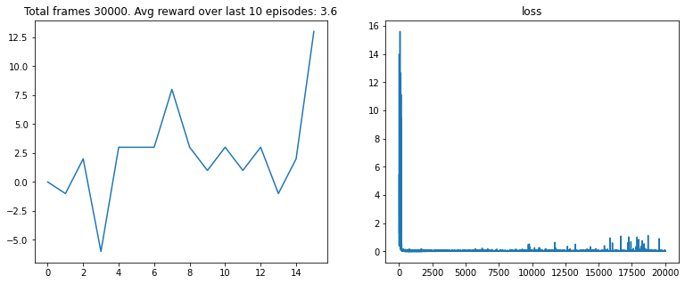

BOXING: DDQN DUELING AGENT
Optimized Deep Reinforcement Learning with Dueling Architectures
AGENT PERFORMANCE DEMO

Project Files & Resources
View the full implementation, including network definitions and environment wrappers, in the complete Jupyter Notebook.
View Full Jupyter Notebook "Mode performance Code"
The Double DQN Dueling Agent (DDA) Code
This implementation uses a Double DQN update rule to combat Q-value overestimation, combined with a **Dueling Network Architecture (DDA)** for faster convergence. The state input is a preprocessed image/vector (4-tuple used for simplified demonstration).
/**
* Double DQN Dueling Agent for the Boxing environment.
* The core distinction is the Dueling architecture in createModel()
* and the Double DQN update logic in learn().
*/
class DoubleDQNDuelingAgent {
constructor() {
// Initializes the primary Q-network and the target network.
this.model = this.createModel();
this.targetModel = this.createModel();
this.targetModel.setWeights(this.model.getWeights()); // Sync weights
// Hyperparameters
// ... (Hyperparameters remain similar to standard DQN)
this.GAMMA = 0.99;
this.BATCH_SIZE = 32;
this.MEMORY_CAPACITY = 5000;
this.epsilon = 1.0;
console.log("DDA Model initialized (TensorFlow.js simulation)");
}
/**
* Defines the structure of the Dueling Q-Network (DQN).
* The final hidden layer is split into two streams: Value (V) and Advantage (A).
* Input State: [Player X, Player Y, Opponent X, Opponent Y, ... (Atari image stack)]
* Output: Q-values for all 18 Atari Boxing actions.
*/
createModel() {
// Placeholder for TensorFlow.js Dueling Network definition
/*
const model = tf.sequential();
// Shared Layers (e.g., Convolutional layers for image input)
model.add(tf.layers.dense({ units: 128, activation: 'relu', inputShape: [4] }));
// --- Split into two streams ---
// Value Stream (V(s))
const value_stream = tf.layers.dense({ units: 1, activation: 'linear' });
// Advantage Stream (A(s, a))
const advantage_stream = tf.layers.dense({ units: 18, activation: 'linear' }); // 18 is the action space size
// Combine (Q(s,a) = V(s) + (A(s,a) - Avg(A(s,a))))
// The final layer applies the Dueling mechanism logic.
model.compile({ optimizer: 'adam', loss: 'meanSquaredError' });
return model;
*/
return {
predict: (states) => { /* simulated prediction */ return { argMax: () => ({ dataSync: () => [1] }) } },
fit: async (states, targets) => { /* simulated training */ },
getWeights: () => [],
setWeights: () => {}
};
}
/**
* Stores an experience tuple (s, a, r, s', done) into the memory buffer.
*/
remember(state, action, reward, nextState, done) {
// ... standard experience replay logic ...
}
/**
* Double DQN Training Step (Sampling and Optimization).
* Crucially, the target Q-value calculation uses the Double DQN rule.
*/
async learn() {
if (this.memory.length < this.BATCH_SIZE) return;
// 1. Sample batch (states, actions, rewards, nextStates, dones)
// 2. Calculate Target Q-values (Double DQN Update Rule)
/*
// Get action chosen by the *Main* Network Q for the next state s'
const main_Q_actions = this.model.predict(nextStates).argmax(1);
// Get Q-value estimate from the *Target* Network Q' using the action
// selected by the Main Network Q. This breaks the Q-value overestimation bias.
const next_Q_values = this.targetModel.predict(nextStates);
// Next state Q-value estimation: Q'(s', argmax_a Q(s', a; theta); theta')
// const next_max_Q = tf.gather(next_Q_values, main_Q_actions, 1);
// Target: R + gamma * next_max_Q
// const target_Q = rewards.add(next_max_Q.mul(this.GAMMA).mul(dones.mul(-1).add(1)));
*/
// 3. Create the updated target Q matrix for training
// ... (standard DQN update process using the DDQN target)
// 4. Fit/Train the main model
// await this.model.fit(states, targetTensor, { epochs: 1, batchSize: this.BATCH_SIZE, verbose: 0 });
// Epsilon decay and memory cleanup
// ...
}
/**
* Periodically synchronize the weights to the target network.
*/
updateTargetModel() {
this.targetModel.setWeights(this.model.getWeights());
}
}Dueling Network Architecture Concept
The Dueling Network decomposes the Q-value into a State Value $V(s)$ and an Action Advantage $A(s, a)$. This separation allows the agent to learn which states are valuable independently of the action taken, improving sample efficiency.
// Conceptual Structure (Graph)
// The final Q-value is $Q(s, a) = V(s) + (A(s, a) - \frac{1}{|A|}\sum_{a'} A(s, a'))$
[Input State s]
|
[Shared Layers]
|
+----------------+----------------+
| |
[Value Stream V(s)] [Advantage Stream A(s, a)]
| |
[Output V(s)] [Output A(s, a) vector]
| |
+----------------+----------------+
|
[Merging Layer] (Subtractive Averaging)
|
[Final Q(s, a)]
(Q-Values for all actions)Jupyter Notebook Training Initialization
The following cells initialize the PyTorch models, environment, and training components before starting the main $\texttt{train\_modif}$ loop.
import torch
import torch.optim as optim
from model import DQN
from wrappers import make_atari_env
from replay_memory import ReplayBuffer
from utils_modif import train_modif, test_modif
from Param_modif import *
from IPython.display import clear_output
import matplotlib.pyplot as plt
%matplotlib inline
device = torch.device("cuda" if torch.cuda.is_available() else "cpu")
device
// Output: device(type='cuda')
env_id = "BoxingNoFrameskip-v4"
env = make_atari_env(env_id)
print(env.action_space)
// Output: Discrete(18)
// Output: ['NOOP', 'FIRE', 'UP', 'RIGHT', 'LEFT', 'DOWN', 'UPRIGHT', 'UPLEFT', 'DOWNRIGHT', 'DOWNLEFT', 'UPFIRE', 'RIGHTFIRE', 'LEFTFIRE', 'DOWNFIRE', 'UPRIGHTFIRE', 'UPLEFTFIRE', 'DOWNRIGHTFIRE', 'DOWNLEFTFIRE']
current_model = DQN(env.observation_space.shape, env.action_space.n).to(device)
target_model = DQN(env.observation_space.shape, env.action_space.n).to(device)
optimizer = optim.Adam(current_model.parameters(), lr=0.0001)
replay_buffer = ReplayBuffer(MEMORY_SIZE)
target_model.load_state_dict(current_model.state_dict())
// Output: <All keys matched successfully>
train_modif(env, current_model,target_model, optimizer, replay_buffer, device)
Double DQN Training Algorithm (Pseudo-code)
The Double DQN (DDQN) formula is used to calculate the target $Y_j$, which significantly reduces the overestimation bias inherent in classic DQN by decoupling the action selection from the target Q-value estimation.
Initialize Q-network Q with random weights $\theta$.
Initialize target Q-network Q' with weights $\theta' = \theta$.
Initialize Experience Replay buffer D (memory).
For each EPISODE:
Initialize state $s$
For $t = 1$ to $T$ (steps within the episode):
// 1. Action Selection ($\epsilon$-Greedy Policy)
Select action $a$:
With probability $\epsilon$, choose random action $a$
Otherwise, choose $a = \underset{a}{\operatorname{argmax}} Q(s, a; \theta)$
// 2. Environment Interaction and Storage
Execute action $a$, observe reward $r$, and new state $s'$
Store experience $(s, a, r, s')$ in buffer D
Set $s = s'$
// 3. Training Step (Sampling and Optimization)
Sample random mini-batch $(s_j, a_j, r_j, s'_j)$ from D
// Calculate Target Value ($Y_j$) using Double DQN Update Rule
// Select best action using MAIN Q-network: $\underset{a'}{\operatorname{argmax}} Q(s'_j, a'; \theta)$
// Estimate Q-value of that action using TARGET Q-network: $Q'(s'_j, \text{action})$
Calculate target value $y_j$:
If $s'_j$ is terminal (game over):
$y_j = r_j$
Else (Double DQN Update):
$a^* = \underset{a'}{\operatorname{argmax}} Q(s'_j, a'; \theta)$
$y_j = r_j + \gamma \cdot Q'(s'_j, a^*; \theta')$
// 4. Update Main Network
Perform a gradient descent step on $(y_j - Q(s_j, a_j; \theta))^2$
to update weights $\theta$ of the main Q-network.
// 5. Update Target Network
Every $C$ steps (e.g., $C=1000$):
Update target network weights: $\theta' = \theta$
Decay $\epsilon$ (e.g., $\epsilon = \epsilon \cdot \epsilon_{\text{decay}}$)Training Performance Metrics
The graphs below illustrate the agent's performance, comparing the reward curve (left) with the stability of the Q-value estimation (right) over training steps.
EPISODIC REWARD HISTORY
